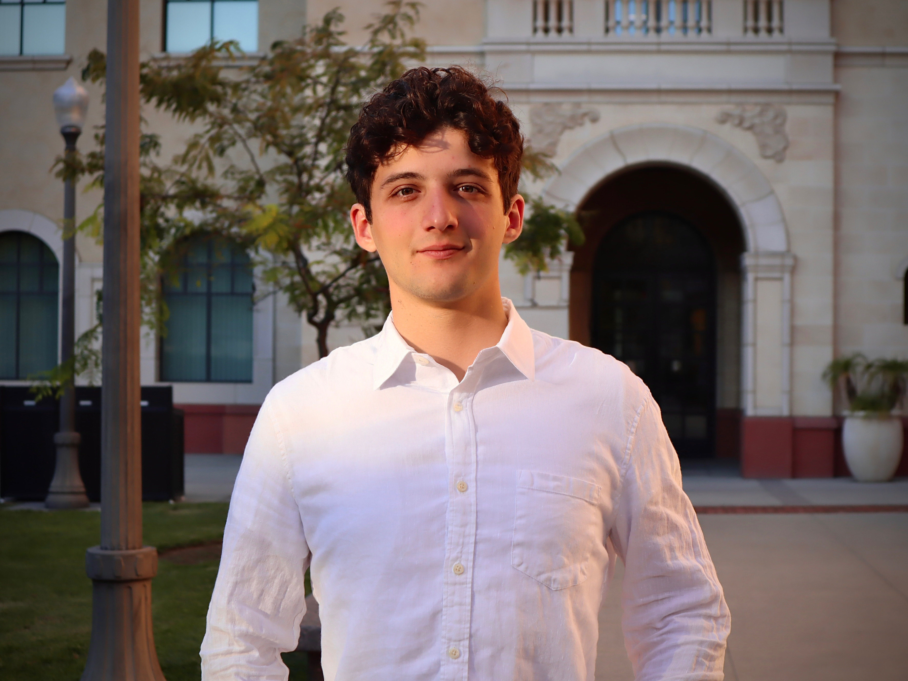
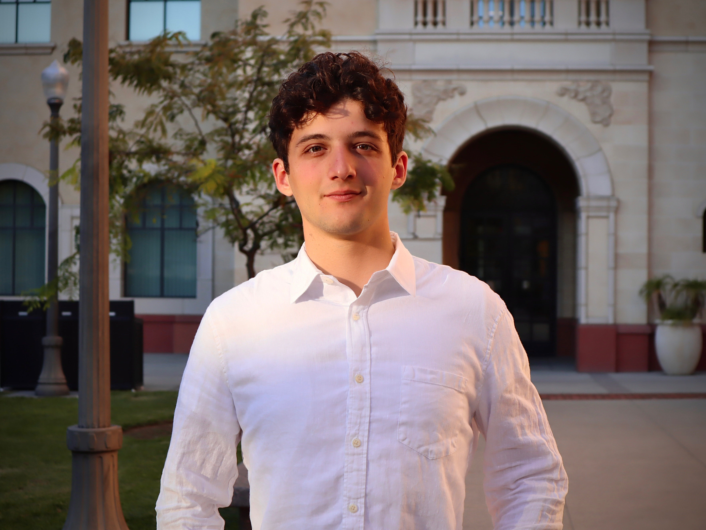

I am a Los Angeles and New York based editor, VFX artist, and colorist with a background that bridges both animation and live-action filmmaking. I began my education in Experimental Animation at CalArts, where I studied under Disney animators and developed a strong foundation in 3D, 2D, compositing, and visual storytelling. I later transferred to USC's School of Cinematic Arts to expand my practice across production and post-production while focusing on a more holistic understanding of filmmaking.
At USC, I have collaborated on many student films as a colorist, VFX artist, editor, and production assistant. These projects gave me practical experience with on-set workflows, camera systems, and lighting setups, which directly informs the creative decisions I make in post. My work spans editing, color grading in DaVinci Resolve, and 3D and VFX work in Blender and After Effects, applied across short films, music videos, and documentary material.
In addition to my coursework, I serve as a post-production intern at Black Valley Films, assisting Academy Award nominated director Scott Hamilton Kennedy on documentary projects. My work includes research, archival sourcing, and observing editorial and finishing processes for active productions. I also work as a cinema projectionist for USC's School of Cinematic Arts, operating 4K digital cinema projectors, Dolby Atmos systems, and handling DCPs for screenings and industry events. This role has strengthened my understanding of exhibition standards and the final delivery pipeline.
I am also trained to load and operate the IMAX MSM 9802 65mm film camera, which introduced me to the precision and discipline required in large-format production. Across all my work, I focus on shaping images with intention, whether through editorial structure, compositing digital elements into practical photography, or building a final grade that completes the visual arc of a project.